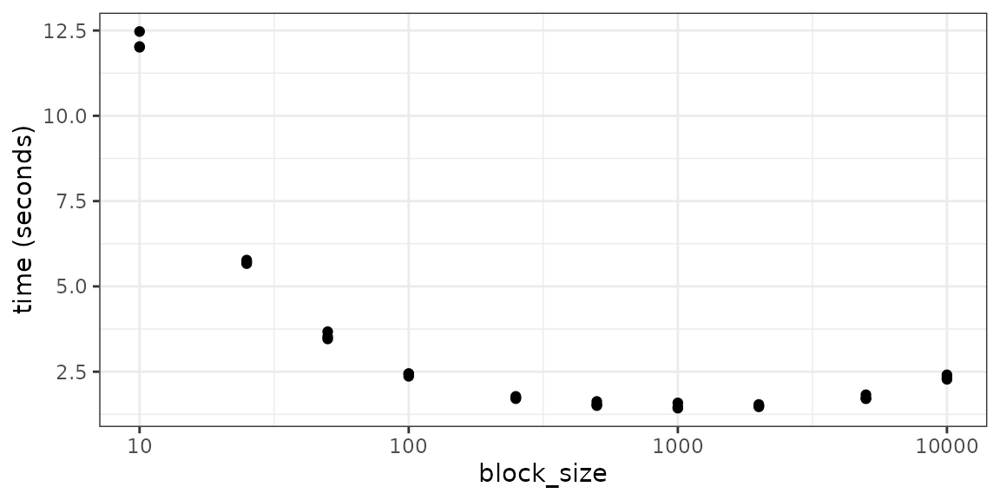

vignettes/practical_tips.Rmd
practical_tips.RmdAbstract
Provides discussion and practical examples for effectively using rhdf5 and the HDF5 file format.
There are scenarios where the most intuitive approach to working with rhdf5 or HDF5 will not be the most efficient. This may be due to unfamiliar bottlenecks when working with data on-disk rather than in memory, or idiosyncrasies in either the HDF5 library itself or the rhdf5 package. This vignette is intended to present a collection of hints for circumventing some common pitfalls.
One of the cool features about the HDF5 file format is the ability to read subsets of the data without (necessarily) having to read the entire file, keeping both the memory usage and execution times of these operations to a minimum. However this is not always as performant as one might hope.
To demonstrate we’ll create some example data. This takes the form of a matrix with 100 rows and 20,000 columns, where the content of each column is the index of the column i.e. column 10 contains the value 10 repeated, column 20 contains 20 repeated etc. This is just so we can easily check we’ve extracted the correct columns. We then write this matrix to an HDF5 file, calling the dataset ‘counts’. 1
m1 <- matrix(rep(1:20000, each = 100), ncol = 20000, byrow = FALSE)
ex_file <- tempfile(fileext = ".h5")
h5write(m1, file = ex_file, name = "counts", level = 6)## You created a large dataset with compression and chunking.
## The chunk size is equal to the dataset dimensions.
## If you want to read subsets of the dataset, you should testsmaller chunk sizes to improve read times.index argument
Now we’ll use the index argument to selectively extract the first 10,000 columns and time how long this takes.
system.time(
res1 <- h5read(file = ex_file, name = "counts",
index = list(NULL, 1:10000))
)## user system elapsed
## 0.034 0.016 0.050Next, instead of selecting 10,000 consecutive columns we’ll ask for every other column. This should still return the same amount of data and since our dataset is not chunked involves reading the same volume from disk.
index <- list(NULL, seq(from = 1, to = 20000, by = 2))
system.time(
res2 <- h5read(file = ex_file, name = "counts",
index = index)
)## user system elapsed
## 0.167 0.004 0.172As we can see this is massively slower than the previous example. This is because creating unions of hyperslabs is currently very slow in HDF5 (see Union of non-consecutive hyperslabs is very slow for another report of this behaviour), with the performance penalty increasing exponentially relative to the number of unions. When we use the index argument rhdf5 creates a hyperslab for each disjoint set of values we want to extract and then merges them. In our first example this only require the creation of a single 100 \(\times\) 10,000 hyperslab, where as in the second case we require 10,000 hyperslabs of dimension 100 \(\times\) 1 and 9,999 merge operations.
If there is a regular pattern to the regions you want to access, then it is likely you could also apply use HDF5’s hyperslab selection method ^[The parameters for defining hyperslab selection start, stride, block, & count are not particularly intuitive if you are used to R’s index selection methods. More examples discussing how to specify them can be found at www.hdfgroup.org. The following code defines the parameters to select every other column, the same as in our previous example.
start <- c(1,1)
stride <- c(1,2)
block <- c(100,1)
count <- c(1,10000)
system.time(
res3 <- h5read(file = ex_file, name = "counts", start = start,
stride = stride, block = block, count = count)
)## user system elapsed
## 0.162 0.000 0.163
identical(res2, res3)## [1] TRUEThis is clearly significantly quicker than using the index argument in the example, and the call to identical() confirms we’re returning the same data.
rhdf5 is sophisticated enough to combine consecutive columns into a single call, so selecting completely disjoint alternative columns represents a worst case scenario. The impact would be far less if, for example, we wanted to extract columns 1 - 5,000 and 6,001 - 11,000. In that scenario it would probably not be noticeably beneficial to move away from using the index argument, but for less contiguous selections making use of the hyperslab selection parameters can be extremely beneficial.
If there isn’t a regular pattern to the columns you want to select, what are the options? Perhaps the most obvious thing we can try is to skip the use of either index or the hyperslab parameters and use 10,000 separate read operations instead. Below we choose a random selection of columns and then apply the function f1() to each in turn.
set.seed(1234)
columns <- sample(x = seq_len(20000), size = 10000, replace = FALSE) %>%
sort()
f1 <- function(cols, name) {
h5read(file = ex_file, name = name,
index = list(NULL, cols))
}
system.time(res4 <- vapply(X = columns, FUN = f1,
FUN.VALUE = integer(length = 100),
name = 'counts'))## user system elapsed
## 262.378 0.844 263.250This is clearly a terrible idea, it takes ages! For reference, using the index argument with this set of columns takes 2.129 seconds. This poor performance is driven by two things:
h5read() HDF5 identifiers are created for the file, dataset, file dataspace, and memory dataspace, each of which are checked for validity. This overhead is negligible when only one call to h5read() is made, but become significant when we make 10,000 separate calls.There’s not much more you can do if the dataset is not chunked, and using the index argument is reasonable. However storing data in this format defeats of of HDF5’s key utilities, namely rapid random access. As such it’s probably fairly rare to encounter datasets that aren’t chunked. With this in mind we’ll create a new dataset in our file, based on the same matrix but this time split into 100 \(\times\) 100 chunks.
h5createDataset(file = ex_file, dataset = "counts_chunked",
dims = dim(m1), storage.mode = "integer",
chunk = c(100,100), level = 6)
h5write(obj = m1, file = ex_file, name = "counts_chunked")If we rerun the same code, but reading from the chunked datasets we get an idea for how much time is wasted exctracted the entire dataset over and over.
system.time(res5 <- vapply(X = columns, FUN = f1,
FUN.VALUE = integer(length = 100),
name = 'counts_chunked'))## user system elapsed
## 51.142 0.520 51.666This is still quite slow, and the remaining time is being spent on the overheads associated with multiple calls to h5read(). To reduce these the function f2()2 defined below splits the list of columns we want to return into sets grouped by the parameter block_size. In the default case this means any columns between 1 & 100 will be placed together, then any between 101 & 200, etc. We then lapply our previous f1() function over these groups. The effect here is to reduce the number of calls to h5read(), while keeping the number of hyperslab unions down by not having too many columns in any one call.
f2 <- function(block_size = 100) {
cols_grouped <- split(columns, (columns-1) %/% block_size)
res <- lapply(cols_grouped, f1, name = 'counts_chunked') %>%
do.call('cbind', .)
}
system.time(f2())## user system elapsed
## 2.409 0.004 2.412We can see this has a significant effect, although it’s still an order of magnitude slower than when we were dealing with regularly spaced subsets. The efficiency here will vary based on a number of factors including the size of the dataset chunks and the sparsity of the column index, and you varying the block_size argument will produce differing performances. The plot below shows the timings achived by providing a selection of values to block_size. It suggests the optimal parameter in this case is probably a block size of 1000, which took 1.43 seconds - noticeably faster than when passing all columns to the index argument in a single call.

Efficiently extracting arbitrary subsets of a HDF5 dataset with rhdf5 is a balancing act between the number of hyperslab unions, the number of calls to h5read(), and the number of times a chunk is read. For a (mostly) contiguous subset using the index argument is sufficient, while for regularly spaced but disjoint subsets the hyperslab selection parameters offer an efficient, if slightly more complex, alternative. Otherwise finding the optimal strategy may involve some experimentation in a similar fashion to we have seen above.
## R version 4.2.0 (2022-04-22)
## Platform: x86_64-pc-linux-gnu (64-bit)
## Running under: Ubuntu 20.04.4 LTS
##
## Matrix products: default
## BLAS: /usr/lib/x86_64-linux-gnu/blas/libblas.so.3.9.0
## LAPACK: /usr/lib/x86_64-linux-gnu/lapack/liblapack.so.3.9.0
##
## locale:
## [1] LC_CTYPE=C.UTF-8 LC_NUMERIC=C LC_TIME=C.UTF-8
## [4] LC_COLLATE=C.UTF-8 LC_MONETARY=C.UTF-8 LC_MESSAGES=C.UTF-8
## [7] LC_PAPER=C.UTF-8 LC_NAME=C LC_ADDRESS=C
## [10] LC_TELEPHONE=C LC_MEASUREMENT=C.UTF-8 LC_IDENTIFICATION=C
##
## attached base packages:
## [1] stats graphics grDevices utils datasets methods base
##
## other attached packages:
## [1] ggplot2_3.3.6 dplyr_1.0.9 rhdf5_2.41.1 BiocStyle_2.24.0
##
## loaded via a namespace (and not attached):
## [1] highr_0.9 bslib_0.3.1 compiler_4.2.0
## [4] pillar_1.7.0 BiocManager_1.30.18 jquerylib_0.1.4
## [7] rhdf5filters_1.8.0 tools_4.2.0 digest_0.6.29
## [10] gtable_0.3.0 tibble_3.1.7 jsonlite_1.8.0
## [13] evaluate_0.15 memoise_2.0.1 lifecycle_1.0.1
## [16] pkgconfig_2.0.3 rlang_1.0.2 cli_3.3.0
## [19] microbenchmark_1.4.9 yaml_2.3.5 pkgdown_2.0.4
## [22] xfun_0.31 fastmap_1.1.0 withr_2.5.0
## [25] stringr_1.4.0 knitr_1.39 desc_1.4.1
## [28] generics_0.1.2 fs_1.5.2 sass_0.4.1
## [31] vctrs_0.4.1 systemfonts_1.0.4 grid_4.2.0
## [34] tidyselect_1.1.2 rprojroot_2.0.3 glue_1.6.2
## [37] R6_2.5.1 textshaping_0.3.6 fansi_1.0.3
## [40] rmarkdown_2.14 bookdown_0.27 farver_2.1.0
## [43] purrr_0.3.4 Rhdf5lib_1.18.2 magrittr_2.0.3
## [46] codetools_0.2-18 scales_1.2.0 htmltools_0.5.2
## [49] ellipsis_0.3.2 colorspace_2.0-3 labeling_0.4.2
## [52] ragg_1.2.2 utf8_1.2.2 stringi_1.7.6
## [55] munsell_0.5.0 cachem_1.0.6 crayon_1.5.1